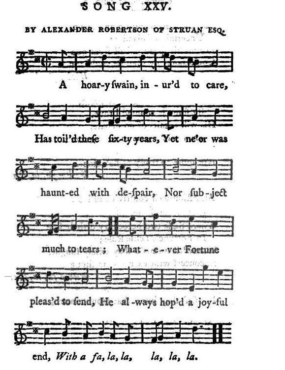
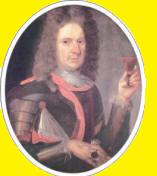
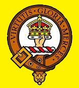

A hoary Swain
Gamin blanchi sous le harnais
by Alexander Robertson of Struan Esq.
Tune - Mélodie"A hoary Swain"
from Joseph Ritson's "Scotish Songs Volume II", song XXV page 93, 1794
Sequenced by Christian Souchon

|
To the tune:
No particulars of the tune are added to the sheetmusic in "Scotish Songs vol. II" (1794) |
A propos de la mélodie:
Aucun détail sur cette mélodie, à part la notation, dans "Scotish Songs Vol. II" (1794). |

|
SONG XXV: A HOARY SWAIN
By Alexander Robertson of Struan Esq. [1] [2] 1. A hoary swain, inured to care,[3] Has toiled these sixty years, Yet ne'er was haunted with despair, Nor subject much to tears; Whatever Fortune pleased to send, He always hoped a joyful end, With a fa, la, la, la, la, la. 2. He sees a champion of renown, [4] Loud in the blast of fame, For safety scouring up and down, Uncertain of his aim; For all his speed, a ball from gun Could faster fly than he could run. With a fa, la, la, la, la, la. 3. Another, labouring to be great, By some is counted brave, His will admits of no debate, Pronounced with look so grave; Yet 'tis believed he is found out Not quite so trustly as he's stout. [ With a fa, la, la, la, la, la. 4. An action well contrived, of late, Illustrates this my tale, Where these two heroes tried their fate In Fortune's fickle scale; Where 'tis surmised they wisely fought, In concert with each other's thought, With a fa, la, la, la, la, la. 5. But first they knew that mountaineers, (As apt to fight as eat) Who once could climb the hills like deers, Now fainted without meat; While English hearts, their hunger stanch, Grew valiant as they crammed their paunch. With a fa, la, la, la, la, la. 6. Thus fortified with beef and sleep, They waddling sought their foes, Who scarce their eyes awake could keep, Far less distribute blows; To whom we owe the fruit of this, Inspect who will, 'tis not amiss. With a fa, la, la, la, la, la. 7. Though we be sorely now oppressed, By numbers driven from home Yet Fortune's wheel may turn at last, And Justice back may come; In providence we'll put our trust, Which ne'er abandons quite the just. With a fa, la, la, la, la, la. 8. Even let them plunder, kill and burn, And our vitals prey, We'll hope for Charles safe return, And justly so we may; The laws of God and man declare The son should be the father's heir. With a fa, la, la, la, la, la. 9. Let wretches, flustered with revenge, Dream they can conquer hearts, The steady mind will never change, 'Spite of their cruel arts: We still have woods and rocks and men What they pull down to raise again. [5] With a fa, la, la, la, la, la. 10. And now let's fill the healing cup, [6] Enjoined in sacred song, To keep the sinking spirits up And make the feeble strong; How can the sprightly flame decline, That always is upheld by wine? [7] With a fa, la, la, la, la, la. Source: Joseph Ritson's "Scotish Songs Volume II", song XXV page 93, 1794 |
CHANT XXV: GAMIN BLANCHI SOUS LE HARNAIS [1]
Par Alexandre Robertson de Struan. [2] 1. Gamin blanchi sous le harnais [3] Soixante années durant, Je ne désespère jamais Et pleure peu souvent. Et quoi que m'inflige le sort, Chez moi l'espoir est le plus fort. Sur l'air du tralala, lala. 2. Je vois un preux dont le renom [4] En tous lieux le précède, D'une course, en large et en long, Il espère de l'aide: Si vite qu'il aille, un boulet Pourra toujours le rattraper. Sur l'air du tralala, lala. 3. Il est obsédé de grandeur Certains le disent brave, Mais gare à ses contradicteurs Quand il prend son air grave. On le croit, mais rien n'est plus faux, Aussi fiable qu'il parle haut. Sur l'air du tralala, lala. 4. Et pour illustrer mon propos, Voilà qu'on imagine De jouer le sort de deux héros, Aux dés de la Fortune; Résultat, on peut le penser, D'un docte combat singulier. Sur l'air du tralala, lala. 5. Il s'avéra qu'un Montagnard (Qui mange autant qu'il lutte), S'il grimpe aussi bien qu'un isard, Ventre creux, craint la chute. Tandis qu'un Anglais, sans la faim, La panse bourrée, ne craint rien. Sur l'air du tralala, lala. 6. Repus de viande et de sommeil, Il brave l'adversaire Qui peine à rester en éveil Que la fatigue obère; Le résultat, on le connaît. Voyez donc si ce n'est pas vrai! Sur l'air du tralala, lala. 7. Bien qu'en grand nombre, l'étranger, Pour l'instant nous oppresse, Fortune, ta roue peut tourner Pour que l'agression cesse. En la Providence ayons foi! Elle fait triompher le droit. Sur l'air du tralala, lala. 8. Qu'ils pillent, qu'ils brûlent, qu'ils tuent Qu'ils nous affament même, L'espérance n'est pas perdue Que Charles nous revienne. C'est la loi de l'homme et de Dieu: On hérite de ses aïeux. Sur l'air du tralala, lala. 9. Ils croient, par la haine aveuglés, Nous briser, ces sauvages. Nos sentiments sont inchangés, En dépit de leur rage: Nous avons pierres et maçons. Détruisez! Nous rebâtirons. [5] Sur l'air du tralala, lala. 10. Levons la coupe qui guérit! [6] Chantons le chant sacré Qui rendra courage aux esprits Et la force aux blessés! Etouffe-t-on un feu divin Qu'entretient à jamais le vin? [7] Sur l'air du tralala, lala. (Trad. Christian Souchon (c) 2010) |
|
[1]
Alexander Robertson of Struan's
military career is addressed in the article
"Robertsons of Struan"
[2] Song by Struan Robertson : Apart from his military achievements, this chief, Alexander Robertson of Struan (1668 - 1749), the erring, chivalrous and poetic thirteenth Chief Clan Donnachie, remains a notable figure in the history of the Highlands. He was no mean poet, and a published collection of his pieces, including a curious genealogical account of his family, has been described as "very creditable to his literary acquirements." [3] "A hoary swain" : Struan Robertson wrote this caustic poem in 1746, after Culloden when he was a hoary outlaw, for the third time, in the wood of Rannoch. He was by then aged 78. [4] "A champion of renown" : Struan appears to have taken up the strong unfounded prejudice against Lord George Murray. [5] "What they pull down to raise again" : After Culloden, Struan's land were ravaged and his house, the Hermitage, burnt to the ground. [6] "Lets fill the healing cup" : In private life Struan Robertson was marked by a conviviality of feeling and humour which is said to have bordered on eccentricity. For instance, when he lost his estates in 1690, his sister, Margaret, collected the rents and petitioned the authorities to allow her brother home. He rewarded her by having her forcibly removed to a remote Hebridean island to avoid paying her annuity. She escaped in time to save his skin after the 1715 Rising and he spent another ten years in exile before she won a pardon for him. After the victory of Prestonpans he appropriated the gold chain, the wolf fur cloak, the brandy, and the carriage belonging to the defeated commander, Sir John Cope. His clansmen escorted him back home. For the last few miles after a wheel had broken, they carried the coach on their shoulders. Amongst Cope's coach was some chocolate. This was viewed with deep suspicion and discarded.  [7] "That always is upheld by wine" : The opposite portrait depicts him holding a glass and toasting the spectator, an appropriate pose since it is recorded that the Duke of Perth was "hors de combat" when Bonnie Prince Charlie sent his summons in 1745. The duke had been staying with Struan and it took him several weeks to recover from the drink he had consumed.Main source for these notes: www.scotswars.com |
 [1] La carrière militaire d' Alexandre Robertson de Struan est retracée à l'article "Robertsons of Struan" [2] Chant de Struan Robertson : Outre ses exploits militaires, Alexandre Robertson de Struan (1668- 1749), 13ème Chef du Clan Donnachie, poétique chevalier errant, demeure une figure emblématique de l'histoire des Hautes Terres. Il ne fut loin d'être un poète médiocre et le recueil de ses œuvres qui comprend entre autre une généalogie de sa famille, témoigne, assure-t-on, d'un talent littéraire tout à fait remarquable." [3] "Gamin blanchi sous le harnais" : Struan Robertson écrivit ce poème caustique en 1746, après Culloden, alors qu'il était devenu un vieux hors-la-loi pour la troisième fois, errant dans les bois de Rannoch. [4] "Un preux de renom ": on voit que Struan était comme la plupart , prévenu contre Lord George Murray. [6] Détruisez! Nous rebâtirons! : Après Culloden, les terres de Struan furent ravagées et sa maison, l'Ermitage, détruite de fond en comble. [6] "Levons la coupe qui guérit" : En privé, Struan Robertson faisait preuve de convivialité et d'un humour qui tendait, dit-on, à l'excentricité. C'est ainsi, que lorsqu'il perdit ses terres en 1690, et que sa sœur Marguerite se chargea de percevoir les baux et d'intervenir auprès des autorités pour permettre son retour, il la remercia en l'obligeant à se retirer sur une île éloignée des Hébrides pour ne pas avoir à lui payer de rente annuelle. Elle s'échappa à temps pour sauver la vie de son frère après le soulèvement de 1715. Il passa à nouveau 10 ans en exil, le temps pour elle d'obtenir sa grâce. Après la victoire de Prestonpans, il s'appropria la chaîne d'or, le manteau en peau de loup, le cognac et le carrosse du commandant vaincu, John Cope. Les hommes de son clan lui firent une escorte triomphale. Vers la fin du trajet, une roue cassa et ils portèrent la voiture sur leurs épaules. Dans celle-ci on trouva du chocolat qui fut examiné avec méfiance et il n'y toucha pas. [7] "Qu'entretient à jamais le vin ": L'image ci-contre le montre un verre en main, buvant à la santé de son vis-à-vis, une pose qui lui était familière. En effet, on sait qu'il avait mis "hors de combat" le Duc de Perth, lorsque le Prince Charles demanda aux chefs de se joindre à lui. Le duc avait séjourné plusieurs semaines avec Struan et mit plusieurs semaines à se remettre des libations auxquelles il avait pris part. Principale source pour ces notes: www.scotswars.com |
|
|
|
|
Farewell to the Hermitage
Many of his poems exist today in a rare collection entitled “Struan’s Poems” published shortly after his death in 1749. Some of the surviving copies show evidence of pages having been snipped out...a Victorian reaction to the naughty subject matter for which he was well known. While not considered a great poet by critics of the day, a few of Struan’s works deserve recognition. One such is “Farewell to the Hermitage”, a poem written to and for his beloved Hermitage just before leaving Scotland for his exile in France. In the poem, Struan personalizes the so-called “Silver Well” which supplied water to the Hermitage, referring to it as “Argentinus” and my “Lovely Fountain”. He drinks a toast to the well and the well toasts him back, adding a promise to “pour out arsenic” if any opponent tries to drink from it. The well was re-discovered by clan members in 2003 and cleared of debris. Located downhill from a mica-bearing cliff, it once again flows with the silvery flecks for which it was named. The exact location of the Hermitage has never been found, having been burned to the ground by the British. Here is the first stanza: With this Diversity of View, Oft have I wav’d my anxious Pain, When from the Summit I pursue The Rock, the River, Woods, or Plain Lakes, Mountains, Meads, Fields fertile far and nigh, Divert my gloomy thought, and court my wand’ring Eye... Source: www.donnachaidh.com/ |
Adieu à l'Ermitage.
L'essentiel de son œuvre poétique se trouve dans un livre rare "Les Poèmes de Struan", publié peu après sa mort en 1749. Les quelques exemplaires qui restant portent les stigmates d'une épuration à l'époque Victorienne, compte tenu des sujets scabreux qu'il affectionnait. Si, de son vivant, il ne fut pas toujours salué avec déférence par les critiques, certains de ses poèmes retiennent l'attention. C'est le cas de l'"Adieu à l'Ermitage", qui est le lieu de composition et le sujet du poème, sa chère résidence qu'il allait quitter pour partir pour la France. Il s'y adresse, comme à une personne, au "Puits d'Argent", qui alimentait en eau l'Ermitage et l'appelle "Argentinus", ou la "Belle Fontaine". Il porte un toast au puits et le puits en porte un, à son tour, en promettant de se charger d'arsenic, si ses adversaires venaient à boire de son eau. Le puits a été retrouvé par des membres du clan en 2003 et nettoyé. Situé en contrebas d'une falaise de micaschiste, il charrie à nouveau les paillettes de mica qui lui valent son nom. L'emplacement exact de l'Ermitage, qui avait été incendié par les Anglais, n'a jamais été retrouvé, Voici la première strophe: Un spectacle aussi varié, A souvent soulagé ma peine. J'aperçois depuis ce sommet Rocs, bois, ruisseau et simples plaines. A perte de vue, prés, monts et fertiles champs Apaisent mon chagrin, hèlent mon œil errant... Source: www.donnachaidh.com/ |
|
|
|